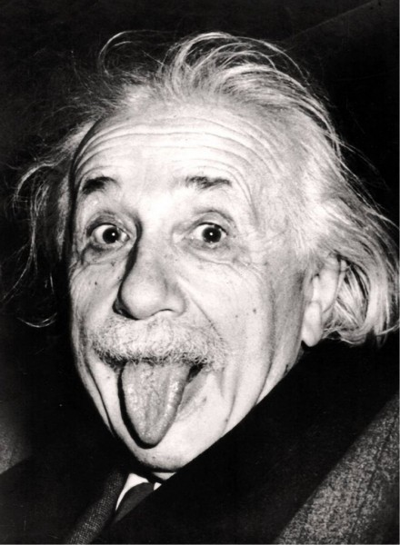
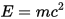

Альберт Эйнштейн

Альбе́рт Эйнште́йн (нем. Albert Einstein, МФА [ˈalbɐt ˈaɪ̯nʃtaɪ̯n] 14 марта 1879, Ульм,
Вюртемберг, Германия — 18 апреля 1955, Принстон, Нью-Джерси, США) — физик-теоретик,
один из основателей современной теоретической физики, лауреат Нобелевской премии по физике
1921 года, общественный деятель-гуманист. Жил в Германии (1879—1893, 1914—1933), Швейцарии
(1893—1914) и США (1933—1955). Почётный доктор около 20 ведущих университетов мира,
член многих Академий наук, в том числе иностранный почётный член АН СССР (1926).
Эйнштейн — автор более 300 научных работ по физике, а также около 150 книг
и статей в области истории и философии науки, публицистики и др.
Он разработал несколькозначительных физических теорий:
-
Специальная теория относительности (1905).
-
В её рамках — закон взаимосвязи массы и энергии :

-
Общая теория относительности (1907—1916).
-
Квантовая теория фотоэффекта.
-
Квантовая теория теплоёмкости.
-
Квантовая статистика Бозе — Эйнштейна.
-
Статистическая теория броуновского движения, заложившая основы теории флуктуаций.
-
Теория индуцированного излучения.
-
Теория рассеяния света на термодинамических флуктуациях в среде
Он также предсказал «квантовую телепортацию», предсказал и измерил гиромагнитный эффект
Эйнштейна — де Хааза. С 1933 года работал над проблемами космологии и единой теории поля.
Активно выступал против войны, против применения ядерного оружия, за гуманизм, уважение прав
человека, взаимопонимание между народами.
Эйнштейну принадлежит решающая роль в популяризации и введении в научный оборот новых
физических концепций и теорий. В первую очередь это относится к пересмотру понимания
физической сущности пространства и времени и к построению новой теории гравитации взамен
ньютоновской. Эйнштейн также, вместе с Планком, заложил основы квантовой теории.
Эти концепции, многократно подтверждённые экспериментами, образуют фундамент современнойфизики.
Никола Тесла
![[Тесла]](physics/Tesla_circa_1890.jpeg)
Нико́ла Те́сла (серб. Ни́кола Те́сла, англ. Nikola Tesla; 10 июля 1856, Смилян, Австрийская империя, ныне в
Хорватии — 7 января 1943, Нью-Йорк, США) — изобретатель в области электротехники и радиотехники сербского
происхождения, инженер, физик. Родился и вырос в Австро-Венгрии, в последующие годы в основном работал во Франции и
США. В 1891 году получил гражданство США.
Широко известен благодаря своему вкладу в создание устройств, работающих на переменном токе, многофазных систем,
синхронного генератора и асинхронного электродвигателя, позволивших совершить так называемый второй этап
промышленной революции.
Также он известен как сторонник существования эфира: известны многочисленные его опыты и эксперименты, имевшие
целью показать наличие эфира как особой формы материи, поддающейся использованию в технике.
Именем Н. Теслы названа единица измерения плотности магнитного потока (магнитной индукции). Среди многих наград
учёного — медали Э. Крессона, Дж. Скотта, Т. Эдисона.
Современники-биографы считают Теслу «человеком, который изобрёл XX век» и «святым заступником» современного
электричества. После демонстрации радио и победы в «Войне токов» Тесла получил повсеместное признание как выдающийся
инженер-электротехник и изобретатель. Ранние работы Теслы проложили путь современной электротехнике, его открытия
раннего периода имели инновационное значение. В США по известности Тесла мог конкурировать с любым изобретателем или
учёным в истории и популярной культуре.